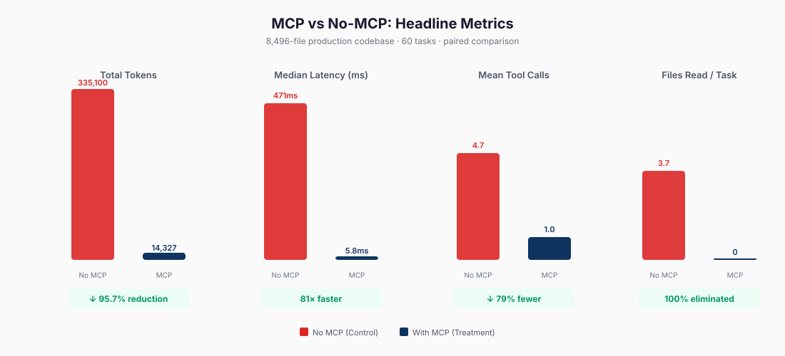
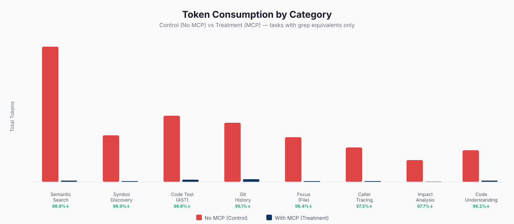

1. Introduction
Repository discovery remains a costly phase in MCP-based coding workflows. Before a client can act on the correct symbol, file, or interface, it typically executes multiple broad searches, opens several files, and accumulates context that is only partially relevant to the task. In the paired study reported here, a representative lexical workflow consumed 5,524 tokens and took 1.11 s, whereas the corresponding indexed find_symbol call returned in 5.66 ms with 65 tokens.
Contextro addresses this inefficiency by replacing file-by-file exploration with structured repository access. It exposes repository search, symbol navigation, relationship tracing, impact analysis, structural search, history lookup, and persistent memory through a local MCP server. The operating premise is straightforward: when discovery tasks can be answered directly, the client does not need to spend context budget reconstructing repository structure from raw files.
This report makes three bounded claims. First, a local code-intelligence layer can materially reduce the token cost of repository discovery. Second, the resulting interface can deliver low latency on a production-scale repository for common lookup tasks. Third, the effect remains visible under stricter analysis that separates directly comparable discovery tasks from MCP-native capabilities with no lexical analogue.
3. System Design
Contextro operates as a local MCP service positioned between the coding client and the repository. Rather than requiring exploratory file reads, it returns structured answers to discovery questions, including identifiers, locations, relationships, and compact supporting excerpts. The objective is to shift discovery from file traversal toward targeted retrieval.

3.1. System Components
| Capability | Representative tools | Returned information |
|---|---|---|
| Search by meaning | search | Exact snippet, file, and line |
| Find a symbol | find_symbol | Definition location and caller count |
| Trace relationships | find_callers, find_callees, explain | Callers, callees, and local context |
| Assess blast radius | impact | Transitive impact set |
| Search structure | code(pattern_search, ...) | AST-level matches |
| Analyze reachability | dead_code, circular_dependencies | Structural analysis results |
| Search history | commit_search | Semantically relevant commits |
| Persist context | remember, recall | Durable memory across sessions |
3.2. Retrieval and Response Design
The retrieval layer combines semantic, lexical, and structural signals. Semantic retrieval supports concept-level matching, lexical retrieval supports exact identifiers and strings, and graph-based traversal supports questions about callers, callees, and impact. Returned material is filtered and abbreviated so that the interface favors direct answers over large context transfers.
The implementation is local and single-process. It integrates vector indexing, lexical retrieval, structural analysis, syntax-aware search, history lookup, and memory in one service boundary. That integration matters operationally because it eliminates the need to orchestrate several external systems during interactive discovery.
4. Methodology
The evaluation uses a paired two-condition design on a single production repository. Each task is executed once with a lexical discovery workflow and once with the Contextro interface. The full task inventory contains 60 tasks across 16 categories. Among these, 39 tasks have direct lexical analogues and therefore support strict paired comparison; the remaining 21 tasks represent MCP-native capabilities with no meaningful file-centric baseline.

4.1. Study Design
The lexical baseline uses repository-wide grep plus bounded follow-up file inspection. For each directly comparable task, the baseline includes grep output and the contents of up to five matching files in the token estimate. The Contextro condition executes one MCP tool call against a pre-indexed repository state. Tasks without a meaningful lexical analogue are retained in the full inventory as MCP-native capabilities, but they are excluded from the directly comparable subset and from the bootstrap robustness analysis.
This design isolates discovery cost rather than downstream coding quality. It compares a file-centric lexical workflow with a structured retrieval interface under a fixed task inventory, shared repository, and common token accounting rule.
4.2. Repository Under Test
| Property | Value |
|---|---|
| Repository | Private production TypeScript monorepo |
| Indexed files | 8,496 files in the private production monorepo |
| Languages | TypeScript and JavaScript |
| Task inventory | 60 tasks across 16 categories |
| Directly comparable subset | 39 tasks across 8 categories |
| MCP-native tasks | 21 tasks without meaningful lexical analogues |
| Indexing observation | 21.1 s full indexing time in the fresh rerun |
| Verification host | Apple M4, 16 GB RAM, macOS 26.4.1, Python 3.12.13 |
4.3. Metrics and Reporting
| Measurement | Definition | Artifact |
|---|---|---|
| Token estimate | Common tokenizer applied to baseline outputs and Contextro responses | Aggregate study summary and rerun summary |
| Latency | Wall-clock milliseconds measured around each task invocation | Aggregate study summary and rerun summary |
| Tool calls and files read | Count of baseline grep/read steps versus one MCP tool call | Aggregate study summary and rerun summary |
| Comparable subset | All tasks with a direct lexical analogue | Comparable-task catalog and subset robustness analysis |
| Robustness analysis | 100 bootstrap task subsets of size 39 with replacement | Subset robustness analysis |
| Open benchmark verification | Public reruns on the open src/ tree for token and retrieval checks | Public benchmark artifacts |
The study is deterministic rather than stochastic in the usual machine-learning sense, so reporting emphasizes medians, ranges, and subset robustness rather than significance testing. The bootstrap analysis is used as a sensitivity check on task composition, not as a population-level inference over repositories.
5. Results
5.1. Headline Outcomes
Across the full 60-task inventory, total token consumption fell from 328,272 in the lexical baseline to 14,407 in the Contextro condition. Mean tokens per task fell from 5,471.2 to 240.1, median latency fell from 448.35 ms to 5.21 ms, and mean files read fell from 2.5 per task to 0. The lexical baseline models bounded file-centric discovery rather than a full autonomous agent policy. The reported gains therefore characterize discovery efficiency, not end-to-end coding correctness.
The stricter comparison is the 39-task subset with direct lexical analogues. On that subset, token use fell to 6,638, a 98.0% reduction, while median latency fell from 498.89 ms to 4.89 ms and mean tool calls fell from 4.9 to 1.0. The gap between the 60-task and 39-task summaries reflects the presence of 21 MCP-native tasks that expose analysis surfaces absent from the lexical baseline.

| Analysis set | Tasks | MCP-native tasks | Lexical tokens | Contextro tokens | Token result | Median latency |
|---|---|---|---|---|---|---|
| Full task inventory | 60 | 21 | 328,272 | 14,407 | 95.6% reduction | 448.35 ms → 5.21 ms |
| Directly comparable subset | 39 | 0 | 328,272 | 6,638 | 98.0% reduction | 498.89 ms → 4.89 ms |
| 100 bootstrap subsets | 100 × 39 | 0 | — | — | median 97.87% 97.24%-98.48% | lexical 458.28-525.76 ms Contextro 2.15-7.00 ms |
No bootstrap subset fell below 97.24% token reduction. The effect therefore remains stable across many task mixtures drawn from the directly comparable subset.
5.2. Results by Category
Table 5 reports the eight categories with direct lexical analogues. Semantic search and symbol discovery show the largest reductions at 98.8%. Caller tracing, impact analysis, code understanding, git history search, and the comparable portion of the code tool remain above 96%.
Tail latency is concentrated in a small number of heavier operations. The focus category is bimodal because one request returns in 4.81 ms while another deep file-context request takes 7.01 s. The comparable code category also contains a repository-wide pattern_search outlier at 11.22 s.

| Category | Comparable tasks | Lexical tokens | Contextro tokens | Reduction | Contextro latency |
|---|---|---|---|---|---|
| Semantic search | 8 | 96,366 | 1,199 | 98.8% | 131.53 ms median 95.19-138.31 ms |
| Symbol discovery | 8 | 34,481 | 413 | 98.8% | 1.81 ms median 1.37-9.13 ms |
| Caller/callee tracing | 6 | 25,915 | 730 | 97.2% | 1.46 ms median 0.92-4.89 ms |
| Impact analysis | 4 | 16,225 | 377 | 97.7% | 0.93 ms median 0.90-3.68 ms |
| Code understanding | 6 | 23,526 | 944 | 96.0% | 6.68 ms median 6.22-8.26 ms |
| Git history search | 2 | 46,106 | 1,117 | 97.6% | 6.51 ms median 5.21-7.80 ms |
| Code tool (comparable slice) | 3 | 51,459 | 1,318 | 97.4% | 1.92 ms median 0.97 ms-11.22 s |
| Focus / file context | 2 | 34,194 | 540 | 98.4% | 3.51 s median 4.81 ms-7.01 s |
5.3. Tool Latency
Most lookup and graph operations remain in the low-millisecond range. The long tail is composed of a small number of deliberately heavier analyses rather than broad slowness. In the fresh rerun, focus_01 took 7.01 s and repository-wide code(pattern_search, ...) took 11.22 s; both are preserved explicitly in Appendix C rather than absorbed into category means.
| Tool | Fresh rerun latency | Role |
|---|---|---|
health | 0.88 ms | Server status |
status | 1.47 ms | Server status |
find_callers | 1.97 ms median | Graph lookup |
find_symbol | 1.81 ms median | Symbol lookup |
impact | 0.93 ms median | Blast radius analysis |
explain | 6.68 ms median | Local understanding |
commit_search | 6.51 ms median | History search |
overview | 93.24 ms | Project summary |
search | 131.53 ms median | Hybrid retrieval |
architecture | 436.75 ms | Deep structural summary |
dead_code | 1,307.18 ms | Reachability analysis |
code(pattern_search, ...) | 11.22 s | Repository-wide AST search outlier |
5.4. Public Verification
Public benchmark reruns on the open src/ tree reproduce the low-token and high-retrieval-quality behavior reported in the paired study. These public checks do not substitute for the private monorepo evaluation, but they do provide an observable external reference for token output and retrieval quality on a redistributable codebase.
| Artifact | Measurement | Result | Source |
|---|---|---|---|
| Historical workflow benchmark | 16-call workflow token budget | 2,552 → 1,043 total output tokens (-59.1%) | Historical tuning log |
| Historical indexing benchmark | Full index and no-change incremental reindex | 279 s → 6.8 s full index; 22 ms no-change incremental | Historical tuning log |
| Public token rerun | 16-call public workflow benchmark | 1,286 total output tokens; 16 calls; 7.5% token reduction | Public benchmark artifact |
| Public retrieval rerun | 20 query retrieval benchmark on src/ | Hybrid MRR 1.0, Recall@1 1.0, Recall@5 1.0, 169.2 avg tokens | Public benchmark artifact |
6. Discussion
The most important interpretive point is that the result becomes stronger, not weaker, under the stricter directly comparable subset. The full 60-task inventory shows a 95.6% token reduction, while the 39-task subset shows a 98.0% reduction because it excludes MCP-native capabilities that have no lexical baseline. This separation clarifies the distinction between replacing file-centric discovery and adding entirely new analysis surfaces.
The bootstrap robustness analysis strengthens that interpretation. Across 100 deterministic task subsets, reduction never fell below 97.24% and the median remained 97.87%. These values do not establish universal generalization across repositories, but they do indicate that the result is not driven by a small number of unusually favorable tasks.
Latency should be interpreted similarly. Common lookup operations are effectively instantaneous, while a few repository-wide analyses remain expensive. The practical result is not uniform sub-10 ms performance; it is that routine discovery operations remain fast while deeper structural queries continue to return structured answers at substantially lower token cost than exploratory file reads.
7. Limitations
The findings in this report are bounded. They describe repository discovery efficiency under a paired task protocol, not general-purpose coding quality under all workflows or repositories.
| Area | Issue | Status |
|---|---|---|
| Paired-study codebase availability | The original 8,496-file monorepo is private and cannot be redistributed with the paper | Mitigated by shipping the harness, sanitized task inventory, rerun summary, and public benchmark reruns |
| Control baseline approximation | The lexical baseline models bounded file-centric discovery with grep plus up to five file reads, not a full autonomous agent policy | Interpret as a discovery-cost baseline rather than a universal baseline for agent quality; end-to-end correctness benchmark is future work |
| Tail latency | focus_01 and repository-wide pattern_search dominate the latency tail at 7.01 s and 11.22 s | Reported explicitly in Appendix C and excluded from any misleading latency simplification |
| Public proxy repository | The paired study corpus is a private monorepo; the public benchmark reruns use only the 78-file src/ tree | A public proxy repository (≥1,000 files) for full rerun reproducibility is planned as future work |
| End-to-end correctness | The study measures discovery cost (tokens, latency, file reads), not downstream coding correctness | An end-to-end edit-task correctness benchmark is future work |
| Next.js App Router reachability | dead_code flags live routes as unreachable | Known limitation |
| Duplicate symbol disambiguation | Multiple definitions with the same name can conflate callees | Under investigation |
| Complexity metrics | maintainability_index reports 0 for TypeScript | Not yet implemented for TS |
The study evaluates one production TypeScript monorepo and focuses on discovery efficiency, latency, and file-read behavior. It does not report an end-to-end correctness benchmark for code changes, nor does it compare against stronger alternatives such as LSP-backed discovery or syntax-aware lexical tooling. The claims in this report should therefore be read as claims about discovery performance and interface quality.
8. Availability and Reproducibility
The public artifact package distinguishes between materials that can be rerun on public code and materials that remain conditional because the study corpus is private. It includes sanitized task catalogs, aggregate study summaries, subset robustness outputs, and public benchmark reruns. Contextro is a proprietary product of Distillation Labs and is not distributed as open-source software.
8.1. Artifact Package
| Artifact class | Public contents |
|---|---|
| Task definitions | Sanitized machine-readable catalogs for the 60-task full inventory and the 39-task directly comparable subset |
| Aggregate study outputs | Archived and fresh paired-study summaries, plus the 100-subset robustness analysis |
| Public reruns | Token-efficiency and retrieval-quality reruns on the public src/ tree |
| Evaluation harness | Scripts required to reproduce public benchmarks and to rerun the paired study where an equivalent private repository is available |
8.2. Rerunnable Commands (Public Benchmarks)
pip install -e .[dev] python scripts/benchmark_token_efficiency.py python scripts/benchmark_retrieval_quality.py --path src --query-limit 20 --output docs/publication/open-retrieval-quality.json ruff check . pytest -v -m "not slow"
8.3. Conditional Paired-Study Rerun
The full paired study requires access to the original private monorepo or to an adapted equivalent repository. The published catalogs preserve task counts, categories, and tool coverage without disclosing private repository identifiers. Where an equivalent repository is available locally, the rerun protocol is:
python scripts/experiment_platform.py --output-dir docs/publication --export-task-catalogs-only python scripts/experiment_platform.py --codebase /path/to/private-monorepo --output-dir /secure/local-output python scripts/task_subset_robustness.py --results /secure/local-output/results.json --subsets 100 --output docs/publication/paired-study-subset-robustness.json
8.4. Verification Environment
The reruns cited in this report were executed on Apple silicon hardware using macOS 26.4.1, an Apple M4 CPU, 16 GB RAM, and Python 3.12.13. The public benchmark harness supports Python 3.10-3.12.
9. Conclusion
Contextro demonstrates that a local code-intelligence layer can reduce the token and latency cost of repository discovery in MCP-based coding workflows. In the paired evaluation reported here, the full 60-task inventory reduced total tokens by 95.6%, while the stricter 39-task directly comparable subset reduced them by 98.0% and remained above 97.24% across 100 bootstrap task subsets. The primary conclusion is narrow but durable: structured repository access can materially outperform bounded file-centric discovery for repository search and navigation.
References
- Anthropic. "Contextual Retrieval." 2024. https://www.anthropic.com/engineering/contextual-retrieval
- Liu et al. "Lost in the Middle." 2023. https://arxiv.org/abs/2307.03172
- NVIDIA. "RAG 101: Retrieval-Augmented Generation Questions Answered." 2023. https://developer.nvidia.com/blog/rag-101-retrieval-augmented-generation-questions-answered/
- NVIDIA. "Finding the Best Chunking Strategy for Accurate AI Responses." 2025. https://developer.nvidia.com/blog/finding-the-best-chunking-strategy-for-accurate-ai-responses/
- OpenAI. "Prompt Caching in the API." 2024. https://openai.com/index/api-prompt-caching/
Appendix A. Experiment Configuration
Appendix A summarizes the paired-study configuration at a high level. It is included to document study scope and reporting parameters without exposing implementation details beyond what is necessary for interpretation.
| Parameter | Value |
|---|---|
| Total task inventory | 60 tasks across 16 categories |
| Directly comparable subset | 39 tasks with lexical analogues |
| MCP-native tasks | 21 tasks with no meaningful lexical baseline |
| Token accounting | Common tokenizer applied to baseline outputs and Contextro responses |
| Lexical baseline | Repository-wide grep plus bounded follow-up file inspection |
| Robustness procedure | 100 bootstrap task subsets of size 39 with replacement |
| Verification host | macOS 26.4.1, Apple M4, 16 GB RAM, Python 3.12.13 |
| Public supporting artifacts | Sanitized task catalogs, aggregate summaries, robustness outputs, and public benchmark reruns |
Appendix B. MCP Tool API Contracts
This appendix summarizes the externally visible MCP tool contracts used by the evaluation. Parameter lists and response fields are described at the interface level. All tools return an MCP ToolResult whose structured_content field carries the JSON payload summarized below; errors are returned as {"error": "…message…"}.
B.1. Discovery and Navigation
search(...) returns ranked retrieval results with file locations, symbol labels, and compact code excerpts.
find_symbol(...) returns exact or fuzzy symbol matches, including definition metadata and local relationship counts.
find_callers(...) and find_callees(...) return direct relationship sets for the requested symbol.
explain(...) returns symbol metadata together with explanatory prose and supporting snippets.
impact(...) returns a transitive impact set summarizing affected symbols, files, and directories.
B.2. Project Intelligence
overview(), architecture(), focus(...), and restore() return project- or file-level summaries intended to orient the client within the repository.
analyze(...), dead_code(), circular_dependencies(), test_coverage_map(), and audit() return higher-level analysis summaries rather than direct retrieval results.
B.3. Git and History
commit_search(...) returns ranked commit matches for a query, while commit_history(...) returns chronological commit lists. repo_status() summarizes the multi-repository registry state.
B.4. Code Intelligence
code(operation, ...) dispatches syntax-aware operations such as symbol lookup, pattern search, and codebase overview generation. Output structure varies by operation but consistently returns result or match collections.
B.5. Memory and Session
remember(...), recall(...), and forget(...) manage persistent memory entries. knowledge(...), session_snapshot(), and compact(...) manage broader session and knowledge state.
B.6. Server Utilities
status(), health(), and index(...) expose operational server state. retrieve(...) fetches sandboxed large responses by reference, and introspect(...) returns runtime tool schemas and settings.
| Tool | Category | Primary inputs | Primary outputs |
|---|---|---|---|
search | Discovery | query, limit, mode, language, symbol_type | total, results[symbol_name, score, filepath, line_start, code] |
find_symbol | Discovery | name, exact | n, f, l, t, callers, callees (single) / total, symbols (multi) |
find_callers | Discovery | symbol_name | callers[] (single) / definitions[{definition, callers}] (multi) |
find_callees | Discovery | symbol_name | callees[] |
explain | Discovery | symbol_name, verbosity | merged symbol fields, analysis, related_code |
impact | Discovery | symbol_name, max_depth | total_impacted, impacted_symbols, impacted_files, impacted_dirs |
overview | Intelligence | (none) | total_files, total_symbols, total_relationships, languages, directories |
architecture | Intelligence | (none) | layers, entry_points, hub_symbols, top_classes |
focus | Intelligence | path, include_code | role, symbols, imports, nearby_tests, blast_radius |
restore | Intelligence | (none) | project, entry_points, layers, risk_summary |
analyze | Intelligence | path | complexity, code_smells, quality |
dead_code | Intelligence | (none) | summary, unused_files, unused_symbols |
circular_dependencies | Intelligence | (none) | summary, cycles |
test_coverage_map | Intelligence | (none) | summary, uncovered_files, uncovered_symbols |
audit | Intelligence | (none) | summary, recommendations |
commit_search | Git | query, limit, branch, author | total, results[hash, author, date, message, top_files] |
commit_history | Git | path, limit, since | total, branch, commits[hash, author, date, message] |
repo_status | Git | (none) | total_repos, total_files, repos, watcher |
code | AST | operation, query/pattern/… | results or matches (shape varies by operation) |
remember | Memory | content, memory_type, tags, ttl | id, status |
recall | Memory | query, limit, memory_type, tags | total, memories[] |
forget | Memory | memory_id, tags, memory_type | deleted_count |
session_snapshot | Session | (none) | codebase, branch, head, vector_chunks, symbols, events |
compact | Session | content | archived, archive_ref, chars, hint |
status | Server | (none) | codebase_path, indexed, graph{n,r,f} |
health | Server | (none) | status, uptime_seconds, indexed, engines |
index | Server | path, paths | status, message, path |
retrieve | Server | ref_id, query | ref_id, content |
introspect | Server | query, doc_path | tools, settings (full runtime schemas) |
Appendix C. Paired-Study Results by Tool Family
Table 10 reports aggregate token and latency measurements grouped by tool family. Rows marked No in the lexical-equivalent column represent MCP-native capabilities and are excluded from the directly comparable subset and bootstrap analyses discussed in Section 5.
| Tool family | Category | Lexical equivalent? | Lexical tokens | Contextro tokens | Contextro latency (ms) | Reduction |
|---|---|---|---|---|---|---|
| find_symbol ×8 | Symbol discovery | Yes | 34,481 | 413 | 1.37–9.13 | 98.8% |
| find_callers/find_callees ×6 | Caller tracing | Yes | 25,915 | 730 | 0.92–4.89 | 97.2% |
| search ×8 | Semantic search | Yes | 96,366 | 1,199 | 95.19–138.31 | 98.8% |
| explain ×6 | Code understanding | Yes | 23,526 | 944 | 6.22–8.26 | 96.0% |
| impact ×4 | Impact analysis | Yes | 16,225 | 377 | 0.90–3.68 | 97.7% |
| focus ×2 | File context | Yes | 34,194 | 540 | 4.81–7,009.60 | 98.4% |
| commit_search ×2 | Git history | Yes | 46,106 | 1,117 | 5.21–7.80 | 97.6% |
| code ×5 (3 comparable / 2 native) | AST operations | Mixed | 51,459 | 1,627 | 0.97–11,222.49 | 96.8% |
| commit_history ×1 | Git history | No | — | 919 | 93.18 | N/A |
| overview | Project structure | No | — | 85 | 93.24 | N/A |
| architecture | Project structure | No | — | 893 | 436.75 | N/A |
| analyze | Code quality | No | — | 1,128 | 29.21 | N/A |
| dead_code | Static analysis | No | — | 933 | 1,307.18 | N/A |
| circular_dependencies | Static analysis | No | — | 545 | 0.77 | N/A |
| test_coverage_map | Static analysis | No | — | 555 | 11.16 | N/A |
| audit | Full report | No | — | 994 | 72.52 | N/A |
| remember/recall/forget | Memory | No | — | 161 | 4.04–13.35 | N/A |
| session_snapshot/restore/compact | Session | No | — | 984 | 0.86–53.54 | N/A |
| status/health | Server ops | No | — | 107 | 0.88–1.47 | N/A |
| introspect | Self-documentation | No | — | 46 | 0.31 | N/A |
| repo_status | Multi-repo | No | — | 102 | 1.40 | N/A |
| knowledge (show) | Knowledge base | No | — | 8 | 0.47 | N/A |